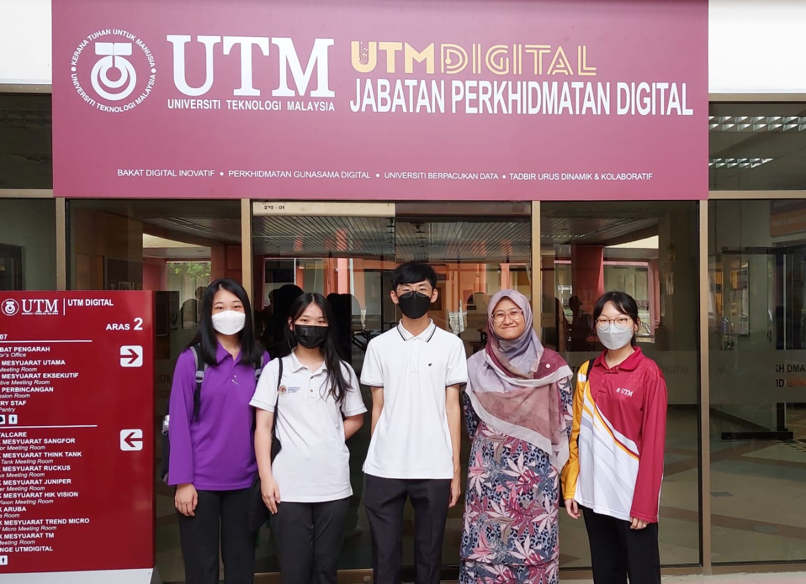
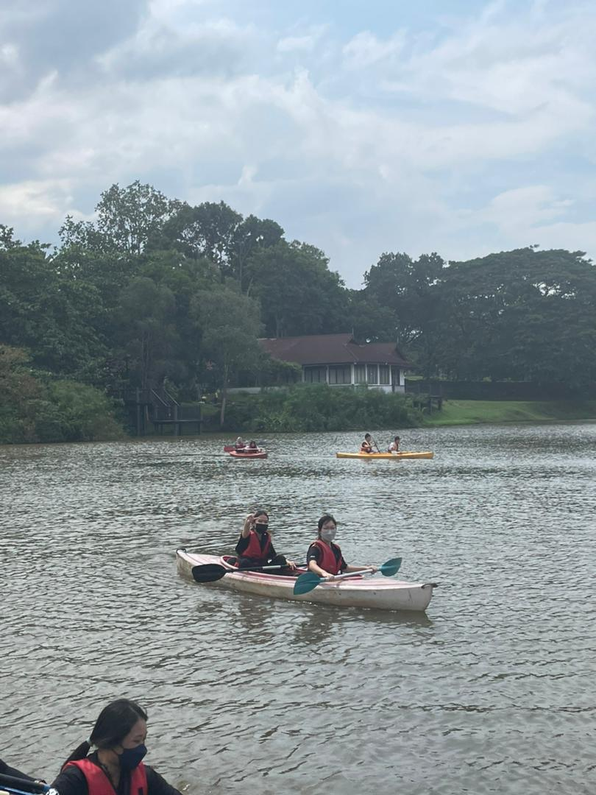
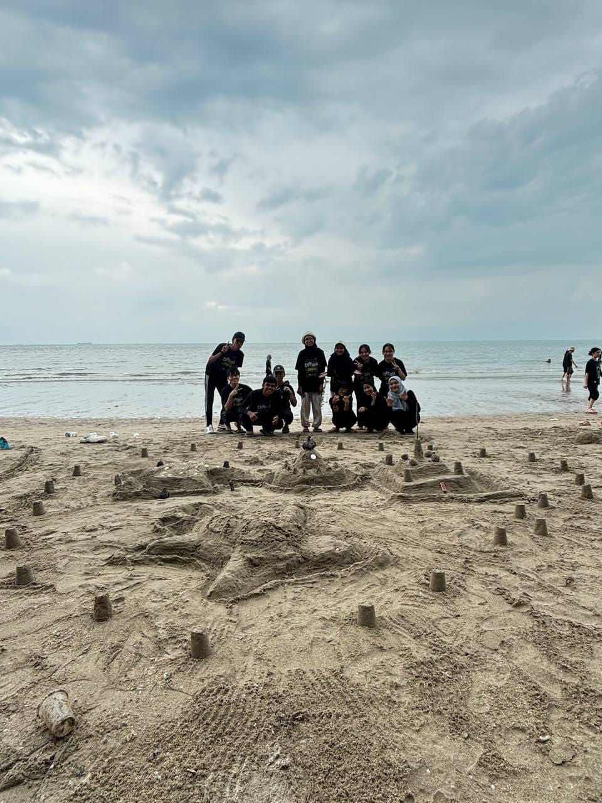
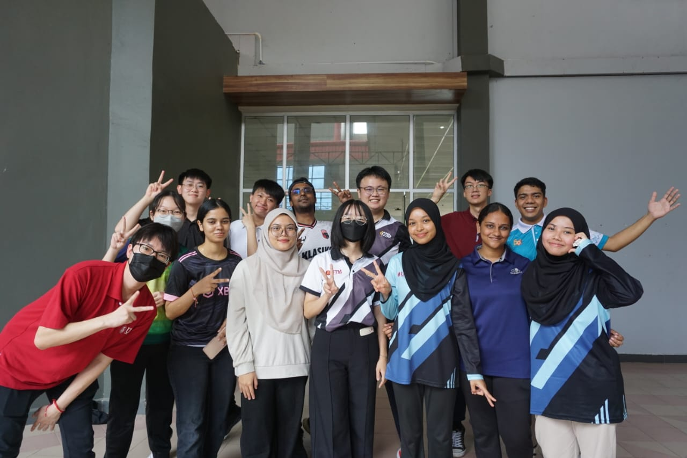

year 1 life
If at first you don't succeed, call it version 1.0
1st year life in UTM
During my first year of college, I studied computer science and became fascinated with the realm of algorithms, coding languages, and creative problem-solving. The first few days were a mix of excitement and acclimatization as I worked my way through the subtleties of computer science principles and the difficulties of new programming languages. My scholastic experience was an exciting investigation of the broad domains of programming, ranging from elementary classes in data structures to more specialized topics like machine learning. By combining practical coding assignments with theoretical knowledge, I improved my proficiency in Python, Java, and C++.
In addition to academic challenges, the campus environment offered a vibrant community of fellow programmers. Working together on projects, taking part in coding contests, and interacting with coding clubs all deepened my knowledge and stoked my enthusiasm for programming. I developed my perseverance and problem-solving skills while I struggled with debugging and optimizing code. In addition to learning syntax and algorithms, the first year focused on laying the groundwork for a future profession in software development. This time of exploration and the friendship of other programmers have prepared the way for what seems to be an interesting voyage into the world of technology and code.
Know more about my college
I'm presently pursuing my education at University of Technology Malaysia (UTM), a prestigious university recognized for its dedication to academic achievement, technical innovation, and worldwide influence. Among the best universities in the area, UTM is a shining example of higher education, nestled in Malaysia's dynamic and culturally varied setting. Students benefit from a dynamic learning environment at the institution because of its emphasis on cutting-edge research, technological breakthroughs, and industry partnerships.
UTM, with its multicultural and welcoming environment, promotes a comprehensive approach to education, developing students' intellectual abilities as well as their leadership and social responsibility skills. The faculty, which consists of renowned academics and business experts, adds a wealth of expertise and guidance to the program. The expansive campus of UTM, furnished with cutting-edge resources and amenities, provides a suitable environment for recreational activities as well as academic endeavors. Intellectual stimulation, cultural richness, and a sense of camaraderie among researchers and innovators worldwide have all been hallmarks of my time at UTM.
YEAR 1 SEMESTER 1
I took courses on integrity and anti-corruption, digital logic, discrete structure, programming technique I, and technology and information systems this semester.
 YEAR 1 SEMESTER 2
Throught this semester, I completed courses in programming technique II, probability & statistical data analysis, system analysis and design, computer organization and architecture, mathematics for computer graphics, and appreciation of ethics and civilizations.
 